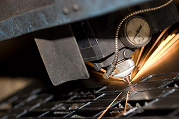

About us at JVC Precision
JVC Precision utilizes the latest technology to provide innovative solutions to our customer's needs. We understand that our clients need a supplier who understands that excellent products and services start with people who listen and can interpret their needs into properly designed and manufactured products. JVC Precision offers skilled technical advice, knowledge, and dependability, which saves our customers time and money. Centrally located in Orillia Ontario, we offer a wide range of custom products from signs and point of purchase displays to agricultural and automotive equipment.
From our 10,000 square foot facility we use state of the art equipment to fulfill our customer's needs, whether it is for one-of -kind items, prototyping, or large production runs.
JVC Precision is dedicated to producing quality products with competitive pricing and excellent service, and look forward to long term working partnerships with our customers.